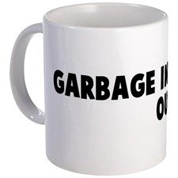

Garbage In, Garbage Out
My dad had this great cup from one of his vists to COMDEX (ostensibly to keep up with the latest in the tech world, which at the time COMDEX represented). It said “Garbage in, garbage out” (GIGO), and then had the name of some failed software company.

I read a great blog about intermediate targets and over-optimizing what you measure (Hawthorne’s law) and the unintended side effects. Then I watched a presentation on the future of data visualization.
The commonality to me is this undesirable focus on the simple over the complex. So a dashboard can in a glance tell you how fast your car is going, which is useful because it maps to two concerns you have as a driver: obeying the speed limit laws, and maximizing your time in the car. I should say, “maps directly”, because as an indicator for these two concerns, speed is pretty much a 1-1 mapping. But consider a car indicator with a much poorer mapping to your concern: the “distance remaining” gauge new cars have. This tells you that based on some model of past driving behavior, you can expect to travel X more miles before the fuel runs out. The problem is this indicator is no longer a simple mapping. You have a (possibly non-linear) model of past behaviour (and no idea how far back the model goes); possibly inaccurate sensors (e.g., depending on temperature, the amount of fuel actually remaining might change); and finally, it is predicting future behavior (you will continue to drive to work tomorrow, and not go on a long distance highway drive).
In much the same way I think this fascination with metrics and dashboards confuses construct for concern. If I’m the government CIO, my concern is the value for taxpayer money each project is generating. But the dashboards are probably showing me constructs like estimated time to completion or lines of source code. Furthermore, and this is the data/info vis piece, those constructs are being mapped into visual variables using some arbitrary function. For instance, the decision to turn something from green to red might be based on a simple threshold chosen by an intern.
In broad strokes, constructs like source lines of code can, I think, be useful: logarithmically, perhaps, in the sense that a system with 100 thousand lines is more complex than one with only 10 thousand.
This typically isn’t how dashboards work, though. Thinking about numbers seems so innately arithmetic (5 is halfway between 1 and 9, not 3) that we cannot comprehend how little the dashboard is telling us. The Japanese lean movement has a nice word that captures what i think needs to happen: genchi genbatsu, “management by walking around”. In a factory, just looking at metrics for production speed and inventory is not the whole picture, and so long ago the Toyota production system creators learned that you had to actually walk the shop floor to see for your own eyes.
This is perhaps harder in the non-physical world of software, but I think for most of us we have a sense of project performance innately: are meetings productive? When was the last time you saw a working piece of code? Do you get quick answer to emails? While it is possible to metricize these things, probably it won’t help much more than buttonholing someone in the hallway.